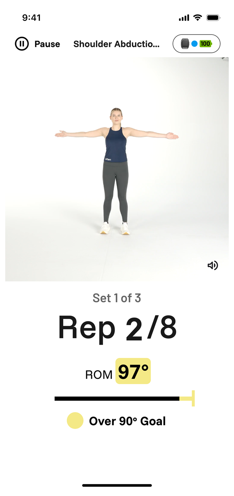
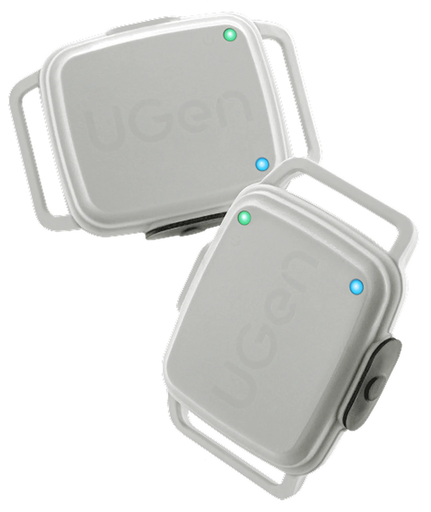
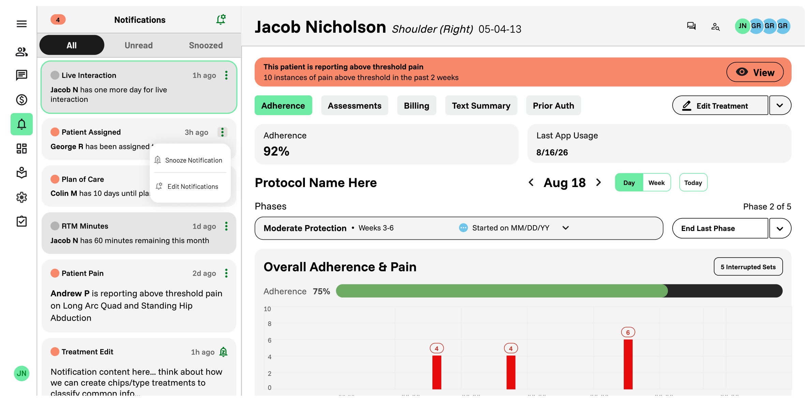
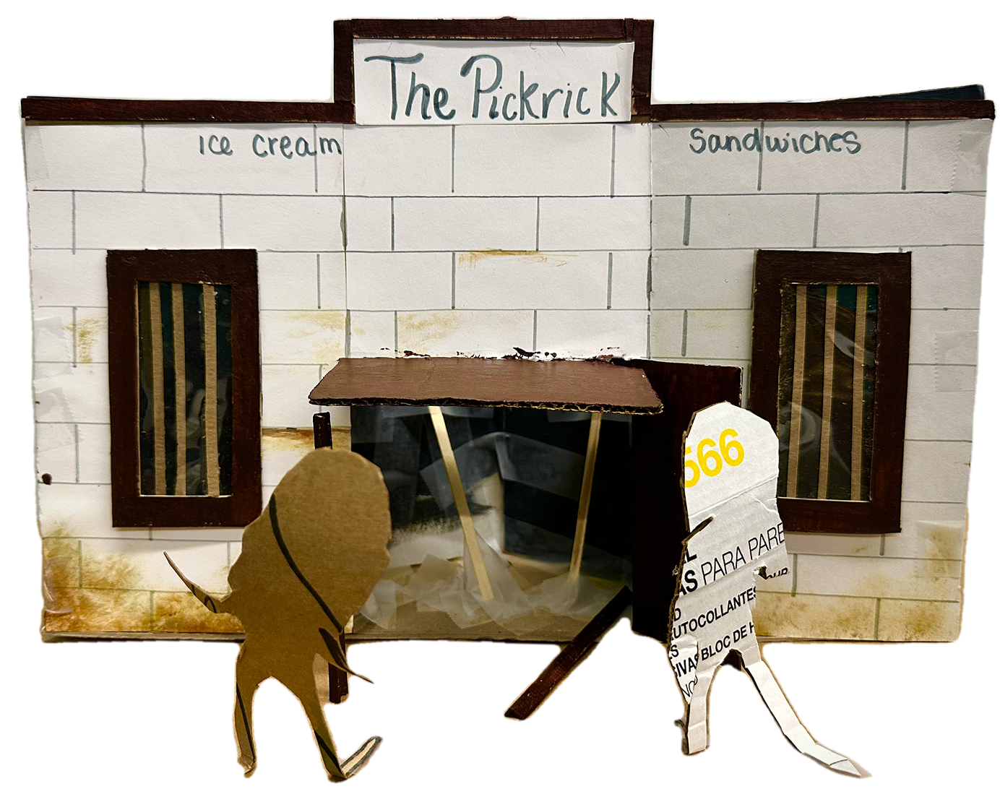
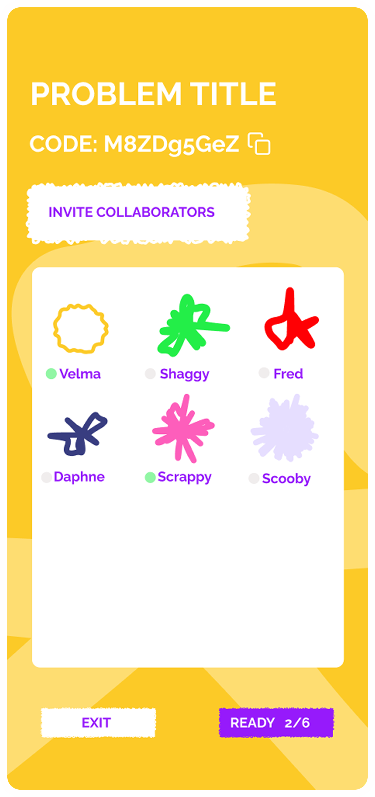

Resume
LinkedIn
Github
About
I’m Jacob, a human-centered
designer & systems thinker
who likes to ask the question
How Might We


View Case Study
View

View Case Study
View

View Case Study
View

View Case Study
View